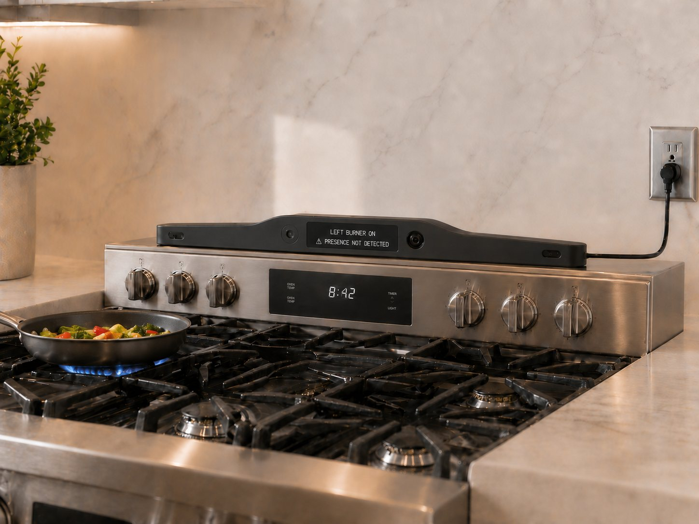

Story One · Ron and Maya at Home
Adaptive Support
Adaptive Support
Download chapterRon and Maya at Home
Download full storyThe next morning, Ron walks into the kitchen and finds the date waiting for him on the screen.
Tuesday, February 2nd, 2027.
“Good morning, Ron,” Livonne says. “Coffee is ready. Your morning pills are beside the coffee maker, and Maya will be here this afternoon.”
Ron looks at the screen, then at the coffee maker.
“Did you make it?”
“No. You set the timer last night.”
“Then what do I need you for?”
“To make sure you remember how impressive you are.”
Ron laughs.
“Fair enough.”
At first, that is what Livonne does.
It answers the question Ron was about to call Maya with. It reminds him what happens next. When he forgets the answer and asks again twenty minutes later, it answers again without impatience or embarrassment.
But after a few weeks, the help begins to change.
Ron asks about the football game almost every weekend because the schedule is ridiculous. Last week it was Sunday afternoon. This week it is Thursday night. The third time he asks, Livonne answers, then offers something more.
“The game starts Thursday at six. Their schedule has been all over the place this year. Would you like me to keep track of it and give you a heads-up before every game?”
Ron thinks about it.
“Tell me the night before. Then again an hour before kickoff.”
“All right.”
“And don’t tell me the score if I’m recording it.”
“I’ll remember.”
That becomes one of their first routines.
One Monday morning, Ron is sitting quietly over his coffee when Livonne speaks.
“Ron, I’ve noticed you do the crossword every Sunday, and you seem to enjoy it. I can put one on the screen for you every morning, if you’d like.”
“You’ve also noticed I sit here doing nothing the rest of the week?”
“I would have said you were enjoying your coffee.”
Ron considers that.
“Put up the crossword.”
A fresh puzzle appears on the kitchen screen.
Ron reads the first clue.
“Three letters. Stubborn old man.”
“Would you like a hint?” Livonne asks.
“No.”
Then one afternoon, Ron puts a pan on the stove and walks into the living room to answer the phone.
The conversation lasts longer than he expects.
The smoke alarm begins screaming.
Livonne hears it through the microphones.
“Ron, the smoke alarm is sounding.”
“I hear it.”
He hurries back into the kitchen. Smoke is rolling from the pan. He turns off the burner, carries the pan to the sink, and opens the windows while Livonne asks whether he needs help.
“I’ve got it,” Ron says, coughing. “It’s handled.”
By the time Maya arrives, the alarm has stopped. The smoke has cleared. But the ruined pan is still sitting in the sink.
“This is getting dangerous, Dad.”
“I burned lunch. I didn’t burn down the house.”
“You left the stove on and forgot about it.”
“I was on the phone.”
“And next time?”
Ron looks away.
“You remember what happened to your friend,” Maya says. “One bad incident, and his family decided he couldn’t stay home.”
“So that’s what this is? I ruin a pan, and you send me to a nursing home?”
“No. This is me trying to keep us from ever having that conversation.”
For a moment, neither of them says anything.
Then Maya looks toward the kitchen screen.
“Livonne, is there something that could help with this?”
“There is a focused cooking-safety accessory called Ranger. It stays near the stove and watches for unattended burners, overheating, and smoke.”
Ron looks at Maya.
“So, another camera?”
“One aimed at the stove,” she says. “Not at you.”
Ron looks back at the ruined pan.
“All right. Order it.”
A few days later, Maya arrives with Ranger. Together, they mount it where it can stay focused on the stove.
Over the following weeks, Ron calls Maya less often during the workday—not because he is withdrawing, but because he no longer has to save every question for her. When something slips, he can ask Livonne and keep moving.
One Wednesday, Ron finishes his morning crossword over coffee. That afternoon, he puts soup on the stove, then settles into his chair in the living room while it heats.
A few minutes later, the living-room screen lights up with a live view of the pot beginning to boil.
“Looks like the soup is ready, Ron,” Livonne says.
He looks at the screen.
“Already?”
“It’s beginning to boil.”
Ron returns to the kitchen and turns off the burner.
When Maya arrives, she no longer has to begin with an inspection.
Livonne recognizes her and shifts to the context Ron has given her permission to see.
“Hi, Maya. Ron took his morning medication on time, finished his crossword, and Ranger caught the soup before it boiled over. He asked about coffee with his sister next Wednesday. Nothing else needs your attention.”
Maya looks at her father.
“Sounds like you had a good day.”
“Productive,” Ron says. “I only cheated twice.”
“You asked for two hints,” Livonne says.
“That’s what I said.”
Maya laughs, takes off her coat, and sits beside him.
“I talked to Aunt Linda. Coffee is still on. I’ll pick you up.”
There is no interrogation. No inventory of pills, meals, appointments, and possible mistakes. Maya does not have to reconstruct the day from fragments, and Ron does not have to defend it.
She can walk into the house already knowing what matters.
And for the first time in a long time, she gets to arrive as his daughter.